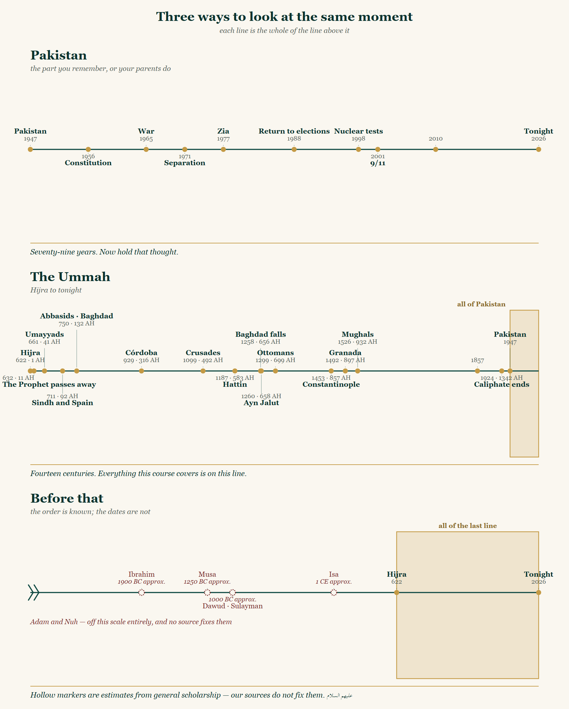
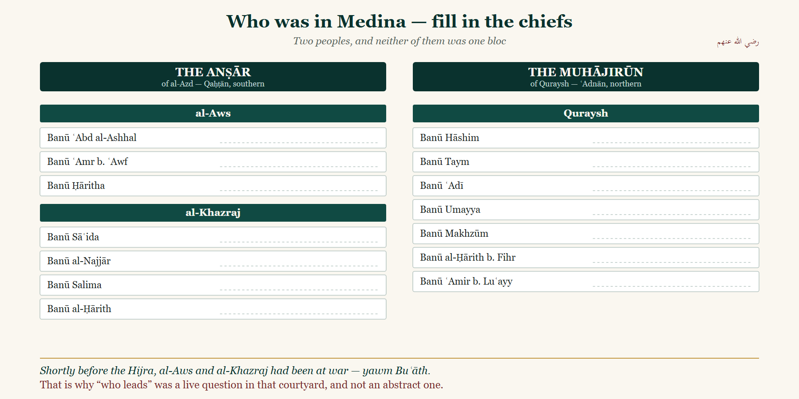
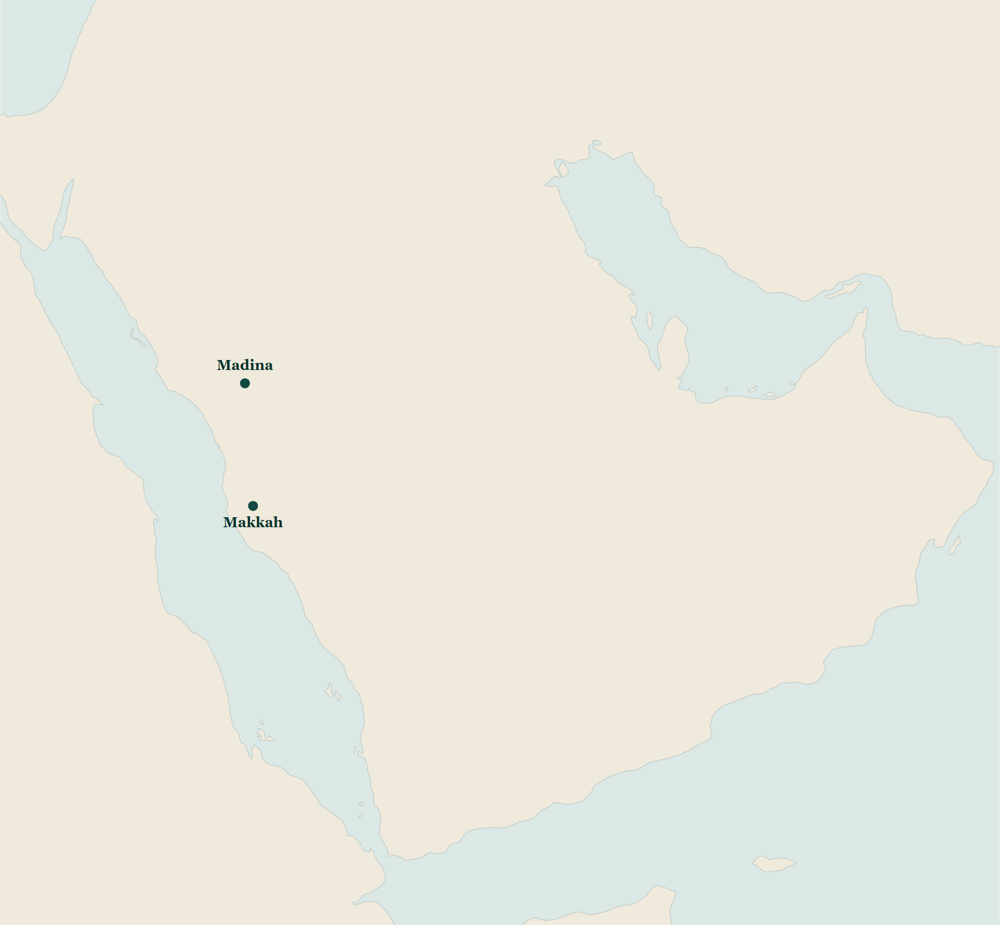

<title>Workbook — Session One</title>
<meta charset="utf-8">
<!--
  handout_l01.html — the session 1 audience worksheet.
  ONE A3 folded to A4 = four A4 PORTRAIT sides: cover · the three timelines · the clan chart ·
  the map and the lesson.

  Supersedes series/handout_w1.html (the v2 session-1 worksheet, landscape). Do not edit that file.

  Render:   python series/embed_fonts.py series/handout_l01.html
  The marker below is what embed_fonts.py replaces with base64 @font-face rules. There is
  deliberately NO Google Fonts <link> here — an offline print shop would silently fall back to a
  Latin serif and destroy every Urdu line (CLAUDE.md §5). English faces are Georgia / Segoe UI,
  which are present on any Windows print machine.

  Fonts: Urdu = Noto Nastaliq Urdu. Arabic = Traditional Arabic (Naskh). The Kasheeda-only
  Nastaliq cut named in CLAUDE.md §1.3 is forbidden — embed_fonts.py refuses to render a file that
  so much as mentions it, comments included, so do not name it here either.
-->
<!--EMBED-FONTS-->

<style>
:root{
  --paper:#FAF7F0;
  --paper-2:#F3EEE3;
  --ink:#1C2321;
  --muted:#5A6862;
  --teal:#104A43;
  --deep:#0A322E;
  --gold:#C49A45;
  --gold-tint:rgba(196,154,69,.14);
  --maroon:#7A2E2E;
  --rule:rgba(16,74,67,.30);
  --faint:rgba(16,74,67,.13);
}
*{box-sizing:border-box}
body{margin:0;background:#5A6862;color:var(--ink);
     font-family:Georgia,"Times New Roman",serif}

/* ── script blocks ──────────────────────────────────────────────────────────
   Urdu and English NEVER share a line or a cell (CLAUDE.md §1.4). Every Urdu
   or Arabic string gets its own element with dir="rtl" and unicode-bidi:isolate. */
.ur{font-family:"Noto Nastaliq Urdu",serif;direction:rtl;unicode-bidi:isolate;line-height:2.15}
.ar{font-family:"Traditional Arabic",serif;direction:rtl;unicode-bidi:isolate;line-height:1.75}

/* English label. letter-spacing is fine on Latin; it is NEVER applied to Nastaliq,
   which is why .lbl-ur below is a separate class. */
.lbl{font-family:"Segoe UI",system-ui,sans-serif;font-weight:700;font-size:8.5px;
     letter-spacing:.17em;text-transform:uppercase;color:var(--muted)}
.lbl-ur{font-family:"Noto Nastaliq Urdu",serif;direction:rtl;unicode-bidi:isolate;
        font-size:12px;line-height:2;color:var(--muted);letter-spacing:normal}
.en{font-family:"Segoe UI",system-ui,sans-serif}

/* padding-bottom reserves the strip the absolutely-positioned .foot sits in — without it the
   last ruled writing line on side 2 printed straight through the folio. */
.page{width:210mm;height:297mm;background:var(--paper);padding:15mm 16mm 20mm;
      margin:0 auto 8mm;position:relative;overflow:hidden;display:flex;flex-direction:column}
.page + .page{page-break-before:always}
.write{border-bottom:1px dotted var(--rule);height:9mm}
.write.tight{height:10mm}

/* ── section head ── */
.head{display:flex;justify-content:space-between;align-items:baseline;
      border-bottom:1.5px solid var(--teal);padding-bottom:2mm;margin-bottom:4mm}
.head h2{margin:0;font-family:"Noto Nastaliq Urdu",serif;direction:rtl;unicode-bidi:isolate;
         font-size:30px;line-height:1.9;color:var(--teal);font-weight:400}
.head .side{text-align:right;max-width:95mm}
.head .side .t{font-size:12.5px;font-style:italic;color:var(--muted);display:block;margin-top:1mm}

figure{margin:0;display:flex;align-items:center;justify-content:center}
figure img{max-width:100%;object-fit:contain}

.foot{position:absolute;bottom:8mm;left:16mm;right:16mm;
      display:flex;justify-content:space-between;align-items:flex-end}

/* ── 1 · cover ── */
.cover{justify-content:space-between;text-align:center;padding-top:22mm;padding-bottom:18mm}
.cover .top h1{font-family:"Noto Nastaliq Urdu",serif;direction:rtl;unicode-bidi:isolate;
               font-size:60px;line-height:1.85;margin:0;color:var(--teal);font-weight:400}
.cover .top .sub{font-size:17px;font-style:italic;color:var(--muted);margin:2mm 0 0}
.cover hr{border:0;border-top:1px solid var(--rule);width:62mm;margin:9mm auto}
.cover .sesslbl{font-family:"Segoe UI",system-ui,sans-serif;font-weight:700;font-size:9.5px;
                letter-spacing:.28em;text-transform:uppercase;color:var(--gold)}
.cover .sess{font-family:"Noto Nastaliq Urdu",serif;direction:rtl;unicode-bidi:isolate;
             font-size:36px;line-height:2;color:var(--deep);margin:2mm 0 0}
.cover .sessen{font-size:15px;font-style:italic;color:var(--muted);margin:1mm 0 0}
.cover .whaten{font-size:13.5px;color:var(--ink);margin:7mm auto 0;max-width:132mm;line-height:1.6}
.cover .whatur{font-size:15px;color:var(--ink);margin:3mm auto 0;max-width:140mm}
.cover .own{font-size:22px;margin:11mm 0 0;color:var(--deep)}
.cover .own u{display:inline-block;min-width:62mm;border-bottom:1px solid var(--rule);
              text-decoration:none}
.cover .dateline{margin:7mm 0 0;display:flex;justify-content:center;align-items:baseline;gap:4mm}
.cover .dateline span.rulebox{display:inline-block;width:54mm;border-bottom:1px solid var(--rule);
                              height:5mm}
.cover .epi{margin:10mm auto 0;max-width:150mm}
.cover .epi .ar{font-size:27px;color:var(--deep)}
.cover .epi .urx{font-family:"Noto Nastaliq Urdu",serif;direction:rtl;unicode-bidi:isolate;
                 font-size:14.5px;line-height:2.1;color:var(--muted);margin-top:3mm}
.cover .epi .cite{margin-top:2mm}
.policy{border:1px solid var(--faint);background:var(--paper-2);padding:4mm 6mm;margin-top:9mm;
        text-align:center}
.policy .en{font-size:11.5px;color:var(--muted);line-height:1.55;margin:2mm 0 0}
.policy .ur{font-size:13px;color:var(--ink);margin:2.5mm 0 0}
.cover .bookline{margin-top:6mm}
.cover .bookline .ur{font-size:12.5px;color:var(--muted)}

/* ── 2 · timelines ── */
.instr{font-family:"Noto Nastaliq Urdu",serif;direction:rtl;unicode-bidi:isolate;
       font-size:15px;line-height:2.1;color:var(--deep);margin:0 0 3mm}
.instr-en{font-size:12px;font-style:italic;color:var(--muted);margin:0 0 4mm}
.tlfig{flex:0 0 auto}
.tlfig img{width:140mm}
.notes{margin-top:5mm}
.notes .lbl-ur{display:block;text-align:right;margin-bottom:1mm}

/* ── 3 · clan chart ── */
.callout{border:1.5px solid var(--gold);background:var(--gold-tint);padding:4mm 6mm;margin:0 0 5mm}
.callout .ur{font-size:16px;line-height:2.1;color:var(--deep)}
.callout .ur.small{font-size:13.5px;color:var(--muted);margin-top:1mm}
.chartfig img{width:100%}
.four{margin-top:8mm}
.four .hdr{display:flex;justify-content:space-between;align-items:baseline;
           border-bottom:1px solid var(--rule);padding-bottom:1.5mm;margin-bottom:3mm}
.row{display:grid;grid-template-columns:66mm 1fr;gap:6mm;align-items:end;margin-bottom:7mm}
.row .who{font-size:14.5px;color:var(--deep);line-height:1.35}
.row .who .h,.alsonote .h{font-size:1.3em;line-height:0}
.row .who .clan{display:block;font-family:"Segoe UI",system-ui,sans-serif;font-size:9px;
                letter-spacing:.13em;text-transform:uppercase;color:var(--gold);
                font-weight:700;margin-top:1.2mm}
.alsonote{font-size:11.5px;color:var(--muted);font-style:italic;line-height:1.55;margin:3mm 0 0}
.srcline{margin-top:3mm;text-align:right}

/* ── 4 · map and lesson ── */
.mapfig img{width:126mm}
.chips{display:flex;flex-wrap:wrap;justify-content:center;gap:3mm 5mm;margin:4mm 0 0}
.chips span{font-family:"Noto Nastaliq Urdu",serif;direction:rtl;unicode-bidi:isolate;
            font-size:15px;line-height:1.9;color:var(--deep);
            border-bottom:1px dotted var(--rule);padding:0 2mm}
.box{border:1px solid var(--faint);padding:4mm 6mm;margin-top:5mm}
.box.lesson{border-color:var(--teal);border-width:1.5px}
.box h3{margin:0;font-family:"Noto Nastaliq Urdu",serif;direction:rtl;unicode-bidi:isolate;
        font-size:22px;line-height:1.9;color:var(--teal);font-weight:400;text-align:right}
.box .hint{font-size:11.5px;font-style:italic;color:var(--muted);margin:0 0 2mm}
.box .q{font-family:"Noto Nastaliq Urdu",serif;direction:rtl;unicode-bidi:isolate;
        font-size:19px;line-height:2.1;color:var(--maroon);margin:1mm 0 2mm}
.box .setup{font-family:"Noto Nastaliq Urdu",serif;direction:rtl;unicode-bidi:isolate;
            font-size:13.5px;line-height:2.05;color:var(--muted);margin:1mm 0 0}

@media print{
  body{background:#fff}
  @page{size:A4 portrait;margin:0}
  .page{margin:0;-webkit-print-color-adjust:exact;print-color-adjust:exact}
}
</style>


<!-- ══════════════════ 1 · COVER ══════════════════ -->
<section class="page cover">

  <div class="top">
    <h1>تاریخ سے سبق</h1>
    <p class="sub">Lessons from History &middot; a course in ten evenings</p>

    <hr>

    <div class="sesslbl">Session One</div>
    <div class="sess">وقت، جگہ، اور ایک رات</div>
    <p class="sessen">Time, place, and one night</p>

    <p class="whaten">Ten evenings on where Islamic history happened, in what order it happened,
      and how we know. Not a race through fourteen centuries &mdash; a map you can keep.</p>
    <p class="whatur ur">دس شامیں — کیا ہوا، کس ترتیب سے ہوا، اور ہمیں کیسے پتا چلا۔</p>

    <p class="own ur">یہ کتاب <u>&nbsp;</u> کی ہے</p>

    <div class="dateline">
      <span class="lbl">Date</span><span class="rulebox"></span>
    </div>
  </div>

  <div class="bottom">
    <div class="epi">
      <div class="ar">وَأَسْبَابِ مَبَادِئِ الدُّوَلِ وَإِقْبَالِهَا، ثُمَّ سَبَبِ انْقِرَاضِهَا</div>
      <div class="urx">سلطنتوں کے آغاز و عروج کے اسباب، پھر اُن کے مٹ جانے کا سبب</div>
      <div class="cite lbl-ur">علامہ سخاوی رحمہ اللہ — الإعلان بالتوبيخ، ص۱۱۱</div>
    </div>

    <div class="policy">
      <span class="lbl">How the evening runs</span>
      <p class="en">No questions during the 45 minutes. Write your question on a slip and drop it
        in the box at the door. The speaker stays for fifteen minutes afterwards.</p>
      <p class="ur">لیکچر کے دوران سوال نہیں۔ سوال پرچی پر لکھ کر دروازے پر رکھے ڈبے میں ڈالیے۔
        لیکچر کے بعد پندرہ منٹ گفتگو کے لیے حاضر ہوں گے۔</p>
    </div>

    <div class="bookline">
      <div class="ur">یہ کورس «تاریخِ امت» سے پڑھا جا رہا ہے۔</div>
    </div>
  </div>
</section>


<!-- ══════════════════ 2 · THE THREE TIMELINES ══════════════════ -->
<section class="page">
  <div class="head">
    <h2>تین لکیریں</h2>
    <div class="side">
      <span class="lbl">The three timelines</span>
      <span class="t">Each line is the whole of the line above it</span>
    </div>
  </div>

  <p class="instr">ہر لکیر اُوپر والی لکیر کو پورا سمو لیتی ہے۔ پہلی لکیر اُنیس سو سینتالیس سے آج
    تک کی ہے، دوسری ہجرت سے آج تک کی، اور تیسری کی تاریخیں معلوم نہیں — صرف ترتیب معلوم ہے۔</p>
  <p class="instr-en">Keep this sheet. Everything the course covers sits somewhere on the middle
    line.</p>

  <figure class="tlfig">
    
  </figure>

  <div class="notes">
    <span class="lbl-ur">آج جو تاریخیں سنیں، وہ یہاں لکھ لیجیے</span>
    <div class="write"></div>
    <div class="write"></div>
    <div class="write"></div>
  </div>

  <div class="foot">
    <span class="lbl-ur">نشست ۱</span>
    <span class="lbl-ur">صفحہ ۲</span>
  </div>
</section>


<!-- ══════════════════ 3 · THE CLAN CHART ══════════════════ -->
<section class="page">
  <div class="head">
    <h2>مدینہ کی ساخت</h2>
    <div class="side">
      <span class="lbl">Who was in Medina</span>
      <span class="t">Two peoples, and neither of them was one bloc</span>
    </div>
  </div>

  <div class="callout">
    <div class="ur">یہ صفحہ آج آپ اپنے ہاتھ سے مکمل کریں گے۔ آج جو نام بولے جائیں — ہر نام اُس کے
      قبیلے کے سامنے والی لکیر پر خود لکھیے۔</div>
    <div class="ur small">جو لکیریں خالی رہ جائیں، وہ گھر لے جائیے اور ہفتے بھر میں بھر لیجیے۔ جو
      نقشہ آپ نے خود بھرا ہو، وہی یاد رہتا ہے۔</div>
  </div>

  <figure class="chartfig">
    
  </figure>

  <div class="four">
    <div class="hdr">
      <span class="lbl">In the courtyard &mdash; four men to remember</span>
      <span class="lbl-ur">آج جو سنا، اپنے لفظوں میں</span>
    </div>

    <div class="row">
      <div class="who">Abū Bakr al-Ṣiddīq <span class="h">ؓ</span><span class="clan">Banū Taym &middot; Quraysh</span></div>
      <div class="write tight"></div>
    </div>
    <div class="row">
      <div class="who">ʿUmar al-Fārūq <span class="h">ؓ</span><span class="clan">Banū ʿAdī &middot; Quraysh</span></div>
      <div class="write tight"></div>
    </div>
    <div class="row">
      <div class="who">al-Ḥubāb b. al-Mundhir <span class="h">ؓ</span><span class="clan">al-Khazraj</span></div>
      <div class="write tight"></div>
    </div>
    <div class="row">
      <div class="who">Bashīr b. Saʿd <span class="h">ؓ</span><span class="clan">al-Khazraj</span></div>
      <div class="write tight"></div>
    </div>

    <p class="alsonote">Also present: Saʿd b. ʿUbāda <span class="h">ؓ</span> &mdash; the courtyard belonged to his clan,
      Banū Sāʿida &mdash; and Abū ʿUbayda b. al-Jarrāḥ <span class="h">ؓ</span>, Amīn al-Umma.</p>
    <div class="srcline lbl-ur">البدایہ والنہایہ، ابن کثیر رحمہ اللہ — ج۵ ص۳۴۵ تا ۳۴۷</div>
  </div>

  <div class="foot">
    <span class="lbl-ur">نشست ۱</span>
    <span class="lbl-ur">صفحہ ۳</span>
  </div>
</section>


<!-- ══════════════════ 4 · THE MAP AND THE LESSON ══════════════════ -->
<section class="page">
  <div class="head">
    <h2>۱۱ھ کی رات</h2>
    <div class="side">
      <span class="lbl">Arabia &middot; 11 AH &middot; 632 CE</span>
      <span class="t">The state of things on the night the Prophet ﷺ passed away</span>
    </div>
  </div>

  <p class="instr">مکہ اور مدینہ نقشے پر پہلے سے موجود ہیں۔ آج جو مقامات سنیں، اُنہیں اپنے ہاتھ سے
    نقشے پر نشان لگائیے۔</p>

  <figure class="mapfig">
    
  </figure>

  <div class="chips">
    <span>الطائف</span><span>الیمامۃ</span><span>نجران</span><span>صنعاء</span>
    <span>البحرین</span><span>عُمان</span><span>حضرموت</span>
  </div>

  <div class="box lesson">
    <h3>آج کا سبق</h3>
    <p class="hint">One sentence, in your own hand. All ten are read together in the last session.</p>
    <div class="write"></div>
    <div class="write"></div>
  </div>

  <div class="box">
    <h3>اگلے ہفتے</h3>
    <div class="setup">یہ نقشہ اُسی رات کی حالت ہے۔ چند مہینوں میں اِس کا بیشتر حصہ الگ ہو جاتا ہے۔</div>
    <div class="q">کیوں؟ اور یہ واپس کیسے آیا؟</div>
    <div class="write tight"></div>
  </div>

  <div class="foot">
    <span class="lbl-ur">اگلے ہفتے — بارہ سال، ۱۱ھ تا ۲۳ھ</span>
    <span class="lbl-ur">صفحہ ۴</span>
  </div>
</section>
